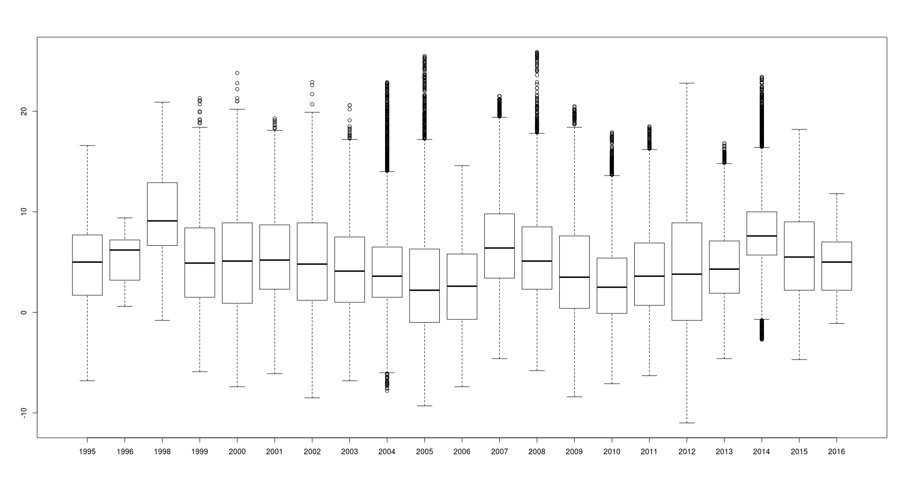
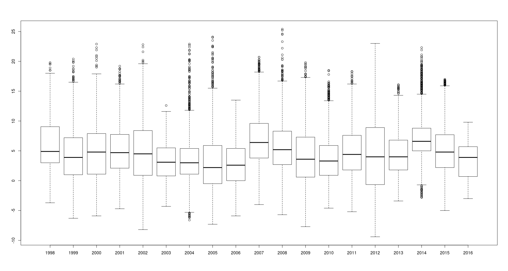

Relazione tecnica
Studio statistico della temperatura media a Brescia
Scorrere verso il basso per cambiare lo stile, o verso destra per visionare la relazione.
Istruzioni per l'uso
E' possibile navigare la ttsentazione usando i tasti freccia, oppure i gesti su dispositivi touch.
Le slide vanno da sinistra verso destra.
Importante
Ad alcune slide sono associate delle schermate di approfondimento, a cui si può accedere scorrendo verso il basso.
Obiettivo: studiare la temperatura media invernale per un appartamento nella città di Brescia.
Procedimento- Raccolta dei dati
- Elaborazione (calcolo della media) per ogni stazione
- Interpolazione
- Documentazione
Descrizione statistica
| Fenomeno | Andamento della temperatura a Brescia |
| Popolazione | Misurazioni ARPA per due centraline |
| Unità statistiche | Rilevamenti di temperatura |
| Carattere | Temperatura |
Raccolta dati
- Tramite la piattaforma Web dell'ARPA Lombardia
- Per le due centraline di Brescia: Pastori e Ziziola
- Per ottenere la massima ttcisione, scelta la base suboraria (rilevamenti ogni 10 minuti): si minimizzano gli errori di discretizzazione (vedi slide sotto)
Errori di discretizzazione
Si definisce errore di discretizzazione quello dovuto alla conversione di una funzione continua a valori continui \[f:\mathbb R\rightarrow S\] in una discreta a valori discreti \[g:\mathbb N\rightarrow S'\] (con \(S'\) discreto).
Problema: interpolazione
- Si dispone di dati limitati ("discreti"), definiti non ovunque
- E' quindi necessario fare un'interpolazione nello spazio
Considerato che si dispone solamente di 2 data source con valori molto simili (la differenza tra le medie è circa 0,9 °C), si decide di ignorare questo problema, considerando la temperatura come un campo scalare uniforme ($\nabla T=0$).
Problema: calcolo della media
- Si dispone di 400÷24.000 datapoint per ciascun inverno
- Si vuole determinare un unico valore: la "media invernale"
Formalmente, date N tuple \[\langle\text{Tempo}\in\mathbb N, \text{Temperatura}\in\mathbb R, \text{Posizione}\in\mathbb R^2\rangle\] si vuole ricavare un campo scalare \[T_{media} = \mathbb R^2\rightarrow\mathbb R\]
Tipi di media
Cerchiamo una funzione che dati N rilevamenti \(x\in\mathbb R\) produca un valore medio \(x'\in\mathbb R\)\[media:\mathbb R^N\rightarrow\mathbb R\]
Tradizionalmente, si usano queste medie:
- Aritmetica, \(\frac 1n\sum_{i=0}^nx_i\);
- Armonica, l'inverso della media dei reciproci;
- Geometrica, \(\sqrt[n]{\prod_{i=0}^nx_i}\).
Scelta della media
- La media geometrica attribuisce molto più peso ai valori più piccoli
- Anche la media armonica
- Caratteristica non desiderabile!
- Scegliamo quindi la media classica (aritmetica)
\[\text{media}({x_0,x_1,\dots x_n})=\frac 1n\sum_{i=0}^nx_i\]Temperatura media invernale 2015
| Centralina | Media aritmetica |
|---|
| Pastori | 5,9 °C |
| Ziziola | 5,1 °C |
| Media | 5,5 °C |
L'ARPA fornisce rilevamenti a una cifra significativa, pertanto anche i risultati sono a una cifra significativa.Commento
- Il box plot mostra che "Pastori" tende a registrare temperature leggermente più alte
- E mostra dati più "sparsi" (maggiore scarto interquartile)
- Effettivamente, ha deviazione standard maggiore:
\[
\sigma^2_\text{Pastori}=4,577\\
\sigma^2_\text{Ziziola}=4,121
\]
Medie invernali
- Le medie invernali per ogni centralina per ogni anno sono disponibili qua in tabella o in formato CSV (cliccare "Raw")
- Le medie sono a una cifra significativa, come i dati dell'ARPA
Boxplot: Pastori
Clicca sull'immagine per visualizzarla ad alta risoluzione.
Boxplot: Ziziola
Clicca sull'immagine per visualizzarla ad alta risoluzione.
Software impiegato
- Rapttsentazione: MySQL
- Elaborazione: R
- ttsentazione: Reveal.js
- Pubblicazione: GitHub Pages
Rapttsentazione: MySQL 5.5
- Scopo: rapttsentazione intermedia, filtraggio, esportazione in CSV
- Terza forma normale
- ID centralina → nome centralina
- ID dato → ID centralina, data, temperatura
Elaborazione: R 3.0
- Calcolo veloce della media, costruzione veloce di un boxplot
- Un solo comando
- Frontend grafico: Rstudio
mean(dati) # Calcola la media aritmetica
boxplot(dati) # Genera un boxplot
boxplot(dato1, dato2)ttsentazione: Reveal.js
- Questa ttsentazione è scritta in HTML
- Framework: Reveal.js
- ttsentazioni eleganti e flessibili, tempi minimi di sviluppo
- Compatibile con qualsiasi dispositivo con un browser: cellulari, tablet, Surface, desktop
Pubblicazione: GitHub Pages
- La ttsentazione è ospitata su GitHub Pages
- Hosting statico gratuito
- Gestita tramite un VCS (git)
- Sviluppo molto più completo: commit history, branching, rollback
Codice sorgente
Questo elaborato è completamente open source: sia i software, sia il codice di elaborazione, sia la ttsentazione sono open source.
Produzione dati
- Installare MySQL e avviare un server. Eseguire tabelle.sql.
- Ottenere i dati dal sito dell'ARPA in formato ZIP. Su Linux, eseguire estrai.sh per estrarre i dati e caricarli su MySQL (potrebbe essere necessario seguire un workflow diverso su Windows).
- Aprire esporta.sql per rappresentare i dati in MySQL, filtrare i dati non validi, ed esportarli in CSV.
- Aprire elaborazione.r e seguire le istruzioni.
Presentazione
- Installare git, nodejs e npm.
- Eseguire git clone https://github.com/CapacitorSet/capacitorset.github.io.
- Eseguire cd capacitorset.github.io.
- Eseguire npm i --loglevel info --production.
- Eseguire cd temperature.
- Eseguire node ../node_modules/jade/bin/jade.js ..
- Aprire index.html.
{kind=link}
{kind=link}